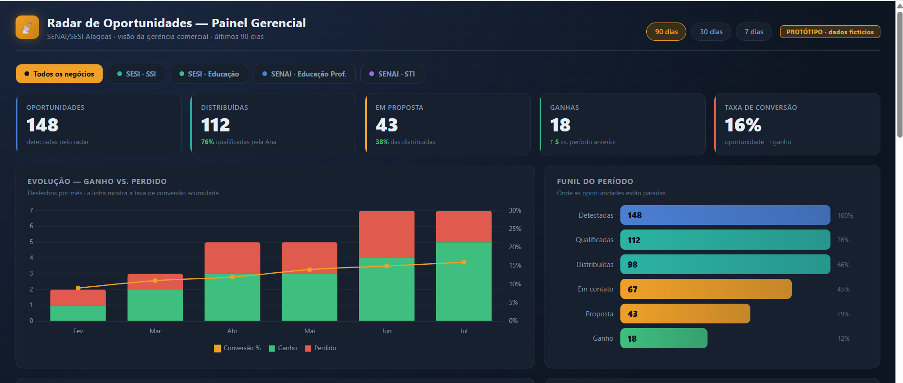
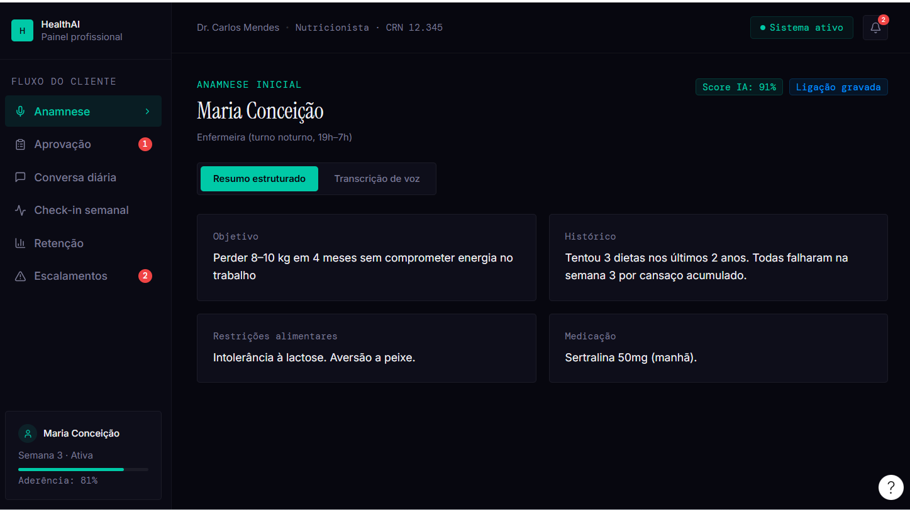
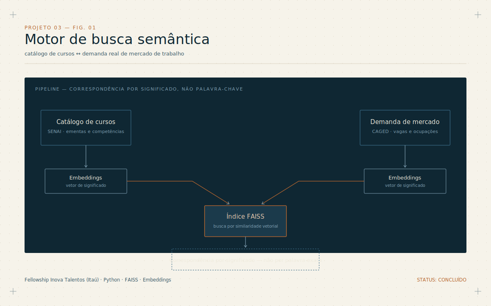
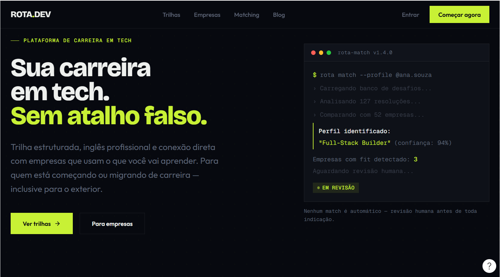

Portfólio técnico
Arquitetura de IA aplicada a sistemas de produção — agentes com validação humana, automação de workflow, inteligência de mercado orientada a dados.
01 — Perfil
Trabalho na fronteira entre dado, pessoas e sistemas de IA. Comecei em operações e gestão de pessoas — reduzi rotatividade voluntária de 25% para praticamente zero numa operação 24/7 nos EUA — e migrei para inteligência de mercado, onde passei três anos sustentando um portfólio analítico de mais de R$ 35 milhões/ano em receita monitorada na Multilaser Industrial.
Hoje construo, do zero, a função de inteligência de mercado do Sistema FIEA/SENAI em Alagoas: dashboards, modelos preditivos e sistemas multiagente de IA em produção, ligando bases de emprego (CAGED/RAIS), CRM comercial (Moskit) e fontes externas via automação. Também dou aula de sistemas empresariais e Java como professor adjunto.
O fio condutor da minha trajetória é o mesmo em toda função que já ocupei: pegar um problema sem estrutura — rotatividade alta, ausência de inteligência de mercado, dado espalhado em oito sistemas — e desenhar o sistema que resolve, com dado e com IA aplicada, não com intuição.
02 — Stack técnico
03 — Trajetória
Construindo a função de inteligência de mercado do zero: dashboard unificado consolidando 27 indicadores de 8+ sistemas, modelo preditivo de evasão (XGBoost+SHAP), sistemas multiagente de IA em n8n/Flowise ligando CRM, dados públicos de emprego e enriquecimento automatizado.
Liderança de 20+ subordinados diretos em operação 24/7.
Rotatividade voluntária: 25% → quase zero em 10 mesesPortfólio analítico sustentando mais de R$ 35 milhões/ano em receita monitorada, com dashboards em Power BI e inteligência competitiva.
Base da fundação em análise de dados aplicada a decisão comercial.
Início de carreira em operações e resultado financeiro direto.
Sistemas Empresariais, Marketing Internacional e Java.
04 — Formação
05 — Estudos de caso
Quatro projetos que mostram o mesmo padrão de trabalho em contextos diferentes: sistema multiagente em produção real, arquitetura de saúde desenhada ponta a ponta, motor de busca semântica aplicado a mercado de trabalho, e um conceito de matching validado por desafio real.
Sistema em construção no Sistema FIEA/SENAI-AL: agentes de IA coletam notícias de investimento, classificam oportunidades por relevância geográfica e setorial, enriquecem com dados de CAGED/RAIS/CNPJ, e entregam briefing visual por e-mail à equipe comercial — com o fluxo de qualificação subindo para dentro do CRM institucional (Moskit).

FIG. — visão do briefing entregue à equipe comercial
Desenho e protótipo funcional de coaching de nutrição e treino por assinatura, com agentes de IA restritos a catálogo validado e aprovação humana obrigatória antes de qualquer entrega ao cliente — pensado para uma economia unitária de assinatura de baixo custo.

FIG. — fila de revisão lado a lado: dado do cliente × ficha técnica gerada pela IA
Em uma frase: o modelo nunca gera item livre — só compõe a partir de um catálogo validado, e nenhuma saída chega ao cliente sem aprovação humana assinada.
Projeto de fellowship (Inova Talentos/Itaú): pipeline de embeddings com FAISS conectando o catálogo de cursos do SENAI à demanda real de mercado de trabalho, permitindo correspondência semântica em vez de busca por palavra-chave exata.

Plataforma de educação digital "student-first" para quem está começando ou migrando de carreira em tecnologia: trilha técnica + inglês, parcerias B2B com empresas e headhunting via IA — o match não é por currículo, é por como o candidato resolve desafios reais que as empresas parceiras já enfrentam, sempre com validação humana antes de qualquer indicação seguir adiante.

06 — Contato
Aberto a conversas sobre arquitetura de IA aplicada, sistemas multiagente em produção e inteligência de mercado orientada a dados.